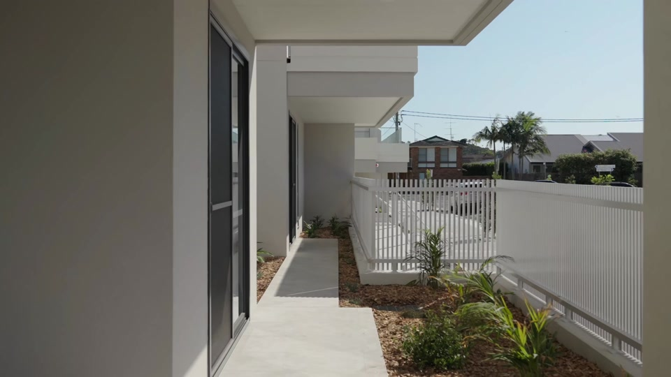

CERTIFICATION BATCH 1 · DEPENDENCY CORRECTION · HUMAN REVIEW
From site to Anna Athina.
Level-specific scheduled façades and louvres. Unit4 wall, D6 and stepped courtyard slab are reconciled against the approved adjudication. Human approval pending. Camera, timing, entry, site and protected B geometry are preserved.
Anna Athina, in the light.
Material and daylight studies · 3 Ferry Road, Ettalong Beach

3 Ferry Road · Ettalong Beach
Designed, constructed, completed.Preparing construction study…
Preparing the isolated study…
Certification Batch 1 — Unit4 registration and slab dependency corrected. Production and frozen baselines remain unchanged.
Full film and before/after comparisons ·
Material evidence and prototype scope
Surfmist and Silver Chest finish families, Monument frames and clear balustrades follow A1201/A1202. Digital colours, glazing response and pool appearance remain visual approximations. The approved blade path is unchanged. Local geometry corrections are documented in the cleanup report.
Glazing divisions are a lightweight material approximation on the existing simplified opening envelopes. There are no modelled interiors, added neighbourhood or water simulation.